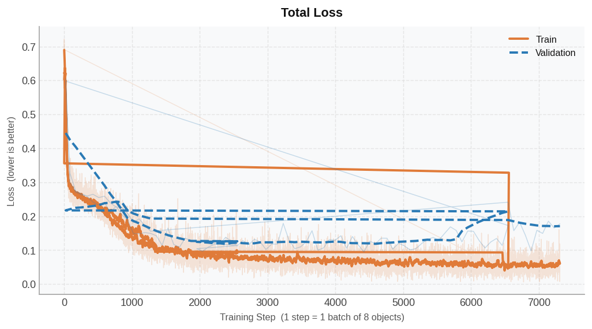
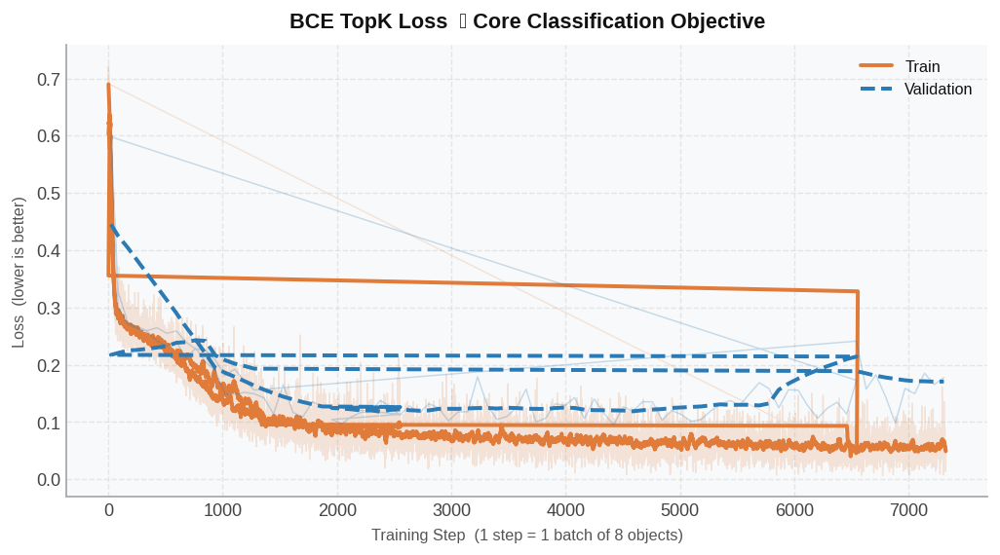
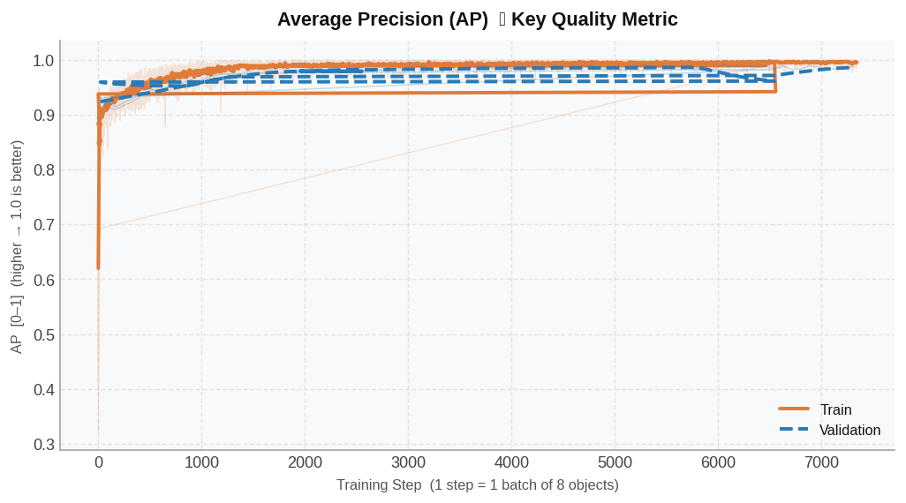
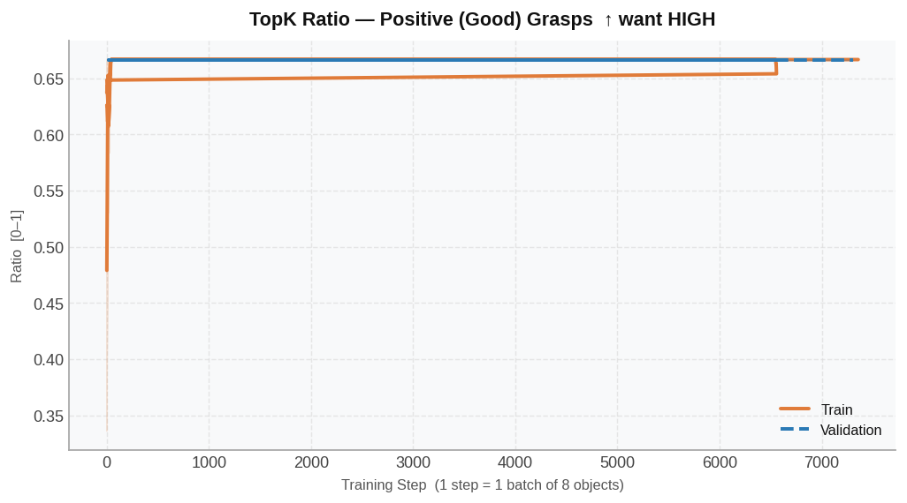
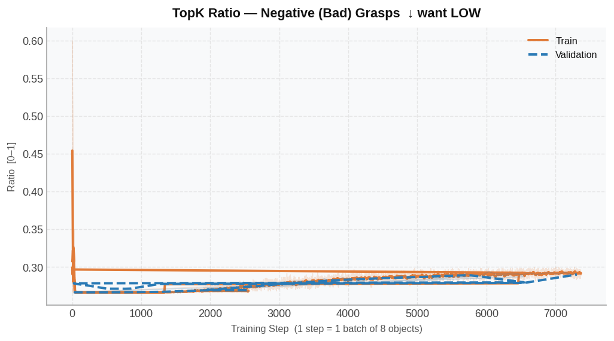
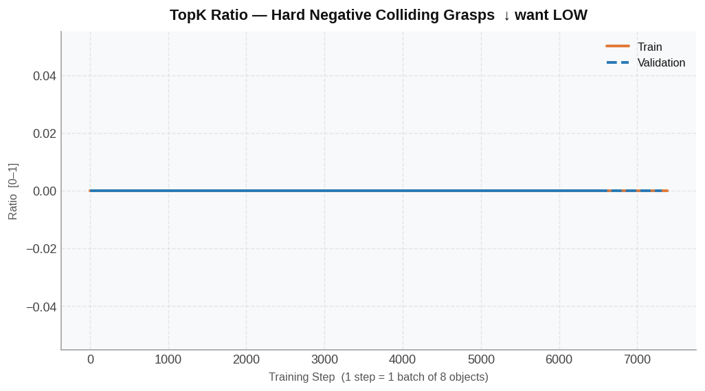
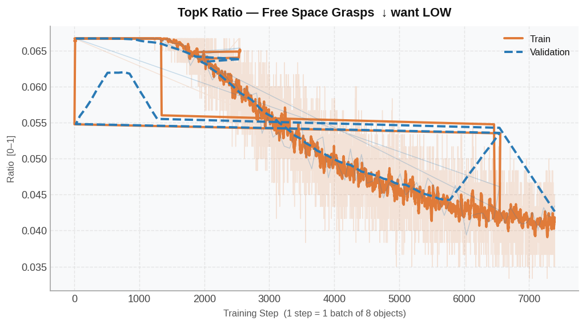
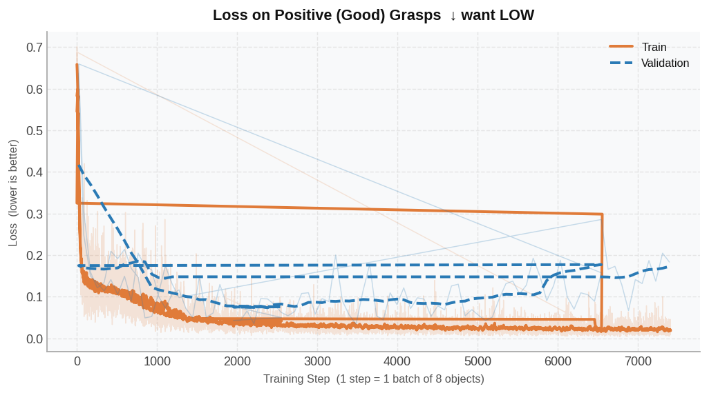
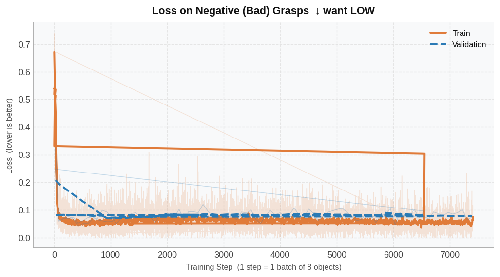
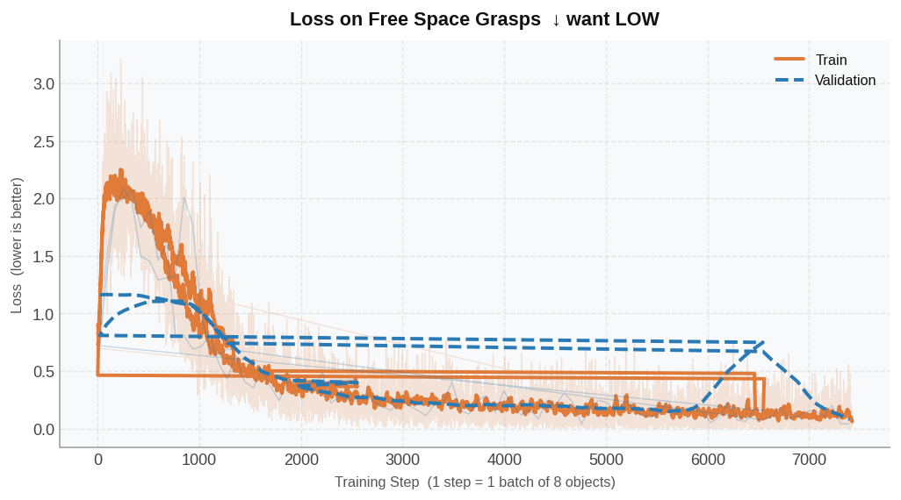

Learns to rank and score grasp quality — separating good grasps from collisions, free-space, and unstable grasps. ~137 train / ~39 valid objects.
① Total Loss
X: Training Step | Y: Loss value

Overall training loss. ↓ lower is better.
② BCE TopK Loss ★
X: Training Step | Y: Loss value

Binary cross-entropy on hardest Top-K grasp samples. Core signal: "good grasp or bad grasp?" ↓ lower = more confident correct predictions.
③ Average Precision (AP) ★
X: Training Step | Y: AP [0–1]

Key metric. How well the model ranks good grasps above bad ones across all thresholds. ↑ higher → 1.0 is better. Target: ≥ 0.85.
④ TopK Ratio — Good Grasps
X: Training Step | Y: Ratio [0–1]

Of the Top-K grasps the model selects, what fraction are actually good? ↑ want HIGH — model promotes real good grasps.
⑤ TopK Ratio — Bad Grasps (Negative)
X: Training Step | Y: Ratio [0–1]

Fraction of Top-K picks that are bad grasps. ↓ want LOW — model demotes bad grasps.
⑥ TopK Ratio — Colliding Grasps
X: Training Step | Y: Ratio [0–1]

Fraction of Top-K that are grasps where gripper collides with the object (physically impossible). ↓ want LOW.
⑦ TopK Ratio — Free Space Grasps
X: Training Step | Y: Ratio [0–1]

Fraction of Top-K that are grasps in free space (gripper misses object entirely). ↓ want LOW.
⑧ Loss on Positive (Good) Grasps
X: Training Step | Y: Loss value

BCE loss on good grasps only. ↓ lower = model confidently scores good grasps as good.
⑨ Loss on Negative (Bad) Grasps
X: Training Step | Y: Loss value

BCE loss on bad grasps only. ↓ lower = model confidently scores bad grasps as bad.
⑩ Loss on Free Space Grasps
X: Training Step | Y: Loss value

Loss on free-space grasps. ↓ lower = model rejects air grasps confidently.